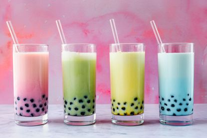

Bubble Tea
Bubble Tea

Description
A fun slushy drink with chewy tapioca pearls! If you can find extra wide straws,
put one in each drink so you can suck the pearls up the straw and chew on them while you are drinking!
Ingredients
- 1 cup large tapioca pearls
- 1 cup milk
- 1 cup chai tea mix
- 2 cups ice
- 3 tablespoons honey, or to taste
Directions
- Fill a saucepan about halfway with water, and bring to a boil. Add the tapioca pearls, and return to a boil.
Stir to make sure they do not start to stick together or to the pot. Cover, and simmer over medium heat for 45 minutes.
Remove from the heat and let stand for 30 minutes, then rinse and drain. The pearls should be squishy and black.
Stir some of the honey into the pearls so they are coated.
- Place the milk, any remaining honey, tea mix, and ice into the container of a blender. Cover, and blend to your desired slushiness.
Pour the tea into two large glasses. Spoon half of the tapioca pearls into each glass. If you can find extra wide straws,
place one into each drink to suck up the pearls and chew on them while you are drinking.